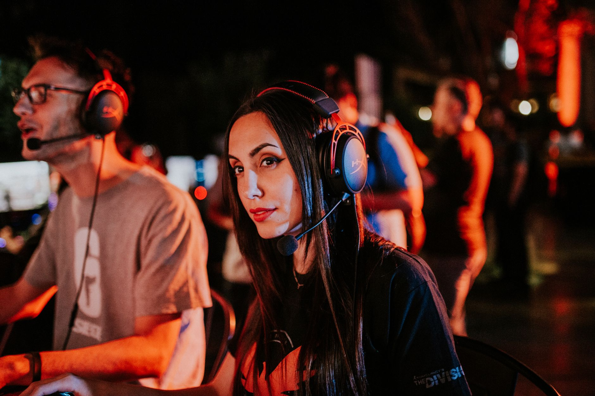

A statement of intent from ropz
In the fast-paced world of professional Counter-Strike, momentum is everything. For FaZe Clan, maintaining a top-tier position is a constant battle against rising talent and shifting metas. However, following their recent performances, the team's core seems more focused than ever on securing their legacy in the CS2 era.
Dylan ropz, one of the most consistent and tactically brilliant players in the world, has made it clear that the team is not looking back. Instead of resting on their laurels or celebrating past championships, the FaZe roster is looking toward the next trophy. This mindset is what separates perennial contenders from true legends of the game.
Maintaining a championship era
The concept of an era in esports is difficult to sustain. Most teams experience a peak and then a gradual decline as players age or lose their competitive edge. FaZe Clan has managed to defy these expectations by consistently adapting to new patches and tactical innovations within the Counter-Strike 2 ecosystem.
Ropz emphasized that the team possesses a unique hunger that prevents complacency. While other teams might struggle with the pressure of being the hunted, FaZe seems to thrive on it. They view every tournament not as a chance to defend a title, but as a fresh opportunity to prove they are still the best.
We have a lot more to give and we're not done with anything.
The tactical evolution of FaZe Clan
Success in CS2 requires more than just raw aim; it requires a deep understanding of utility usage, positioning, and mid-round calling. FaZe Clan has built their reputation on this high-level tactical execution. They are often able to outmaneuver opponents even when they are at a disadvantage in firepower.
Key factors contributing to their sustained success include:
Challenges on the road ahead
Despite their confidence, the road to maintaining dominance is fraught with obstacles. The competitive landscape is becoming increasingly crowded with young, hungry talent from various regions. Teams are investing more heavily in coaching staff and analysts, making the gap between top teams narrower than ever before.
Burnout and roster stability are also significant concerns in the professional circuit. As seasons become longer and the travel schedule becomes more grueling, maintaining the high level of focus required by players like ropz becomes a monumental task. FaZe will need to manage their energy levels to ensure they don't hit a wall mid-season.
Looking toward the future of CS2
As the Counter-Strike 2 scene continues to mature, the importance of veteran leadership cannot be overstated. Players who have navigated the transitions from CS:GO to CS2 provide a stabilizing force for their organizations. Ropz and his teammates represent this bridge between the old guard and the new era.
The future looks bright for FaZe Clan if they can continue to implement the winning mentality ropz has described. Their ability to evolve alongside the game is their greatest strength. If they can maintain this trajectory, we might be looking at one of the longest-running dynasties in esports history.
Connecting the dots in professional rosters
Understanding how top-tier teams maintain their status often involves looking at how they manage player transitions and integration. While FaZe focuses on stability, other organizations are constantly experimenting with new talent to find that perfect chemistry.
For a different perspective on how major organizations handle roster changes, you might find it interesting to read our previous coverage on huNter- Discusses Integrating r1nkle into FaZe Clan at https://dhyey.bond/blog/hunter-discusses-integrating-r1nkle-into-faze-clan/. It provides great context on the complexities of team dynamics within the same organization ropz represents.
As we move into the next major tournament cycle, all eyes will be on FaZe Clan to see if they can turn these ambitious words into more trophy lifts.
See Also
If you enjoyed this Esports News article, check out huNter- Discusses Integrating r1nkle into FaZe Clan for more useful reading.